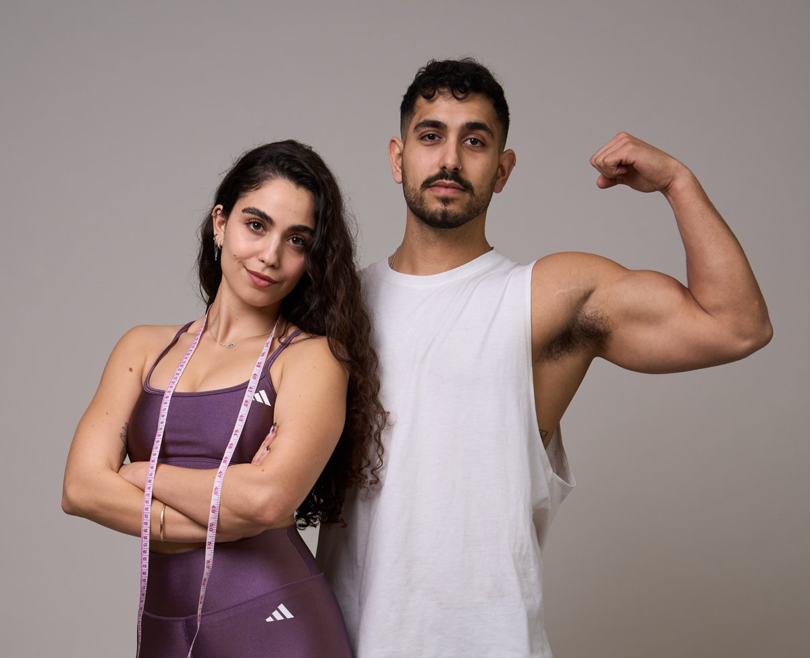

ספר המתכונים של העצלנים והחטובים
אוכל טעים ומגוון, עם כל הערכים התזונתיים - בלי להרגיש בדיאטה.
לא מצאנו מתכון כזה. נסו מילה אחרת או הסירו סינון.

מבשלים פעמיים, רגועים כל השבוע
שבוע עמוס? בדיוק בשבילו יש את השיטה הזו. הסוד: לבשל פעמיים בשבוע, ולהגיע לכל ארוחה מוכנים.
בוחרים 2 ימי בישול
למשל מוצאי שבת ושלישי בערב: במוצאי שבת מבשלים לראשון, שני ושלישי. בשלישי מבשלים לרביעי וחמישי. שישי ושבת כבר שונים - בשישי צריך פתרון רק עד הצהריים, ובערב יש ארוחת שישי.
-
פחמימה
בוחרים מנת פחמימה לימים הבאים, עד יום הבישול הבא (אפשר גם שתיים, לגיוון). ומשחקים איתה: בורגול חם ליד מנת חלבון, או קר בתוך סלט.
-
חלבון
מכינים מנות חלבון חמות: חזה עוף, פרגית, סינטה, טופו, שייטל. ויש גם חלבון שמגיע מוכן, בלי מאמץ: טונה, גבינות, ביצים, מנות בשר בהכנה מהירה.
-
ירקות
הירקות הם מקור טוב לשובע ולסיבים תזונתיים, ויש שני סוגים:
- ירקות זמינים: כדאי שתמיד יחכו במקרר מיני ירקות - עגבניות שרי, מיני מלפפונים, מיני גמבות. שוטפים, שמים בשקית ולוקחים איתכם.
- ירקות מבושלים: שעועית ירוקה מוקפצת, כרובית וזוקיני בתנור. מכינים מגש אנטיפסטי באותו יום בישול, והוא מחזיק לכם עד ליום הבישול הבא.
-
מסתכלים על השבוע
צריך קופסאות לעבודה? יש אירוע מיוחד? מתארגנים מראש.
למה זה עובד
כשמכינים מראש, לא מגיעים רעבים לארוחות - ולא נופלים למאכלים שפחות מתאימים לתקופה שבחרתם לעצמכם.
בהתחלה תפספסו לפעמים את הכמויות. עם הזמן זה משתפר - לבשל זה סקיל.
מה רמת הרעב שלכם עכשיו?
בוחרים את התחושה שהכי מתאימה לכם עכשיו.
סולם הרעב והשובע
אוכלים בשלב 3, עוצרים בשלב 7. אפשר להזיז את הסמן.